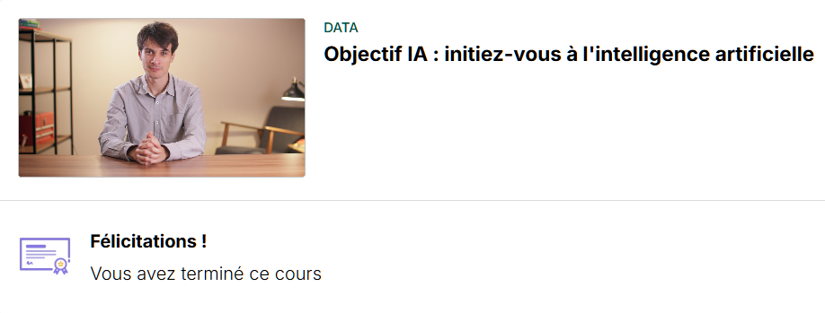
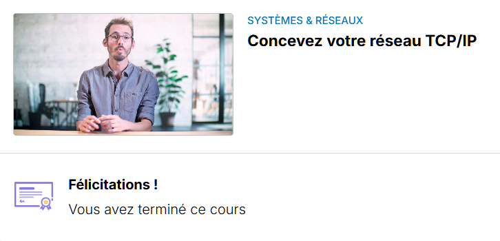

Organiser son développement professionnel
Veille Informationnelle & Technologique
Mise en place d'une veille régulière sur l'actualité informatique, les nouveautés
high-tech et la cybersécurité via la consultation des plateformes
Frandroid,
ANSSI et
CNIL.


Gérer le patrimoine informatique
Répondre aux incidents et aux demandes d'assistance et d'évolution
Développer la présence en ligne de l'organisationS
Travailler en mode projet